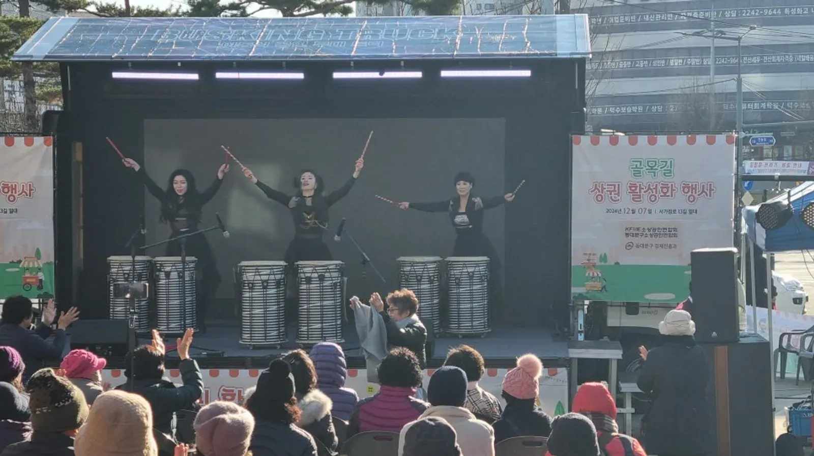

행사 준비 · 2026년 11월 10일
행사 공연 큐시트 작성: 출연자 대기부터 퇴장 신호까지
행사 공연 큐시트는 순서 이름보다 누가 준비를 확인하고 누가 시작을 알리는지가 먼저입니다. 출연팀은 대기 중인데 음악이 먼저 나오거나, MC 소개가 끝났는데 무대가 비어 있는 상황을 막기 위한 확인표를 정리합니다.
이 글은 전체 식순이 아니라 공연 한 순서를 안전하게 넘겨주는 담당자용 준비 방법입니다.

- 도착 확인과 무대 진입 가능 확인을 서로 다른 칸에 적습니다.
- 소개 멘트, 음원, 조명의 실행 신호를 담당자별로 구분합니다.
- 준비 미완료 때 쓸 보류 안내와 대체 순서를 주최 측이 정합니다.

1. 행사 공연 큐시트는 출연팀 확인에서 시작합니다
공연명만 적힌 식순으로는 악기 반입이나 대기 위치를 알기 어렵습니다. 출연팀 연락 담당에게 무대에 가져오는 물건, 사용할 마이크, 재생할 파일을 확인해 별도 칸으로 정리합니다.
도착했다는 연락과 공연 준비가 끝났다는 연락은 다릅니다. 현장 도착, 대기 장소 입실, 장비 확인, 무대 진입 가능을 구분해야 MC가 어느 단계인지 판단할 수 있습니다.
출연자 개인 연락처를 여러 인쇄물에 반복하지 말고 팀 연락 담당과 연결되는 경로를 운영용 문서에 둡니다. 객석에 배포하는 식순에는 내부 연락처와 대기 장소의 상세 정보를 넣지 않습니다.
| 받을 정보 | 확인 질문 | 기록할 상태 |
|---|---|---|
| 팀명·공연명 | 소개 때 읽을 이름이 맞는가 | 확정 표기 |
| 출연 구성 | 무대에 오르는 인원과 소품은 무엇인가 | 팀 확인 대기 또는 확인 |
| 장비·파일 | 직접 가져올 것과 현장 사용분은 무엇인가 | 담당자별 준비 범위 |
| 대기·이동 | 어디서 기다리고 누구를 따라 이동하는가 | 대기 위치와 안내 담당 |
| 마지막 장면 | 인사 후 바로 퇴장하는가 | 박수·퇴장 신호 |
2. 시작 시각과 시작 신호를 나눕니다
예정 시각은 흐름을 맞추는 기준이고 실제 실행은 현장 확인을 거쳐야 합니다. 시각이 되었다는 이유만으로 음원을 재생하지 않도록 신호를 주는 담당자를 합의합니다.
소개 시작, 음원 시작, 퇴장 시작을 같은 신호로 묶지 않습니다. MC 소개 중 입장하는 팀인지, 입장을 마친 뒤 소개하는 팀인지 먼저 확인합니다.
| 장면 | 먼저 확인할 것 | 실행 담당에게 줄 말 |
|---|---|---|
| 소개 전 | 출연팀 대기·무대 사용 가능 | 공연 소개 준비 완료 |
| 입장 | 이동 경로와 소품 반입 상태 | 입장 안내 시작 |
| 음원 시작 | 출연팀 시작 자세와 재생 파일 | 합의한 시작 신호 |
| 공연 종료 | 팀이 정한 마지막 동작 | 박수 안내 후 퇴장 |
| 다음 순서 | 소품 철수와 다음 장비 확인 | 무대 전환 완료 |

북 공연 사진은 무대와 객석의 관계를 보는 참고 자료입니다. 사진 속 공연에서 어떤 신호나 큐시트를 사용했는지는 확인되지 않았으므로 이 표와 실제 운영을 동일하게 설명하지 않습니다.
3. 음원과 소품은 순서 번호로 연결합니다
같은 제목의 음원이 여러 개면 파일 이름만 보고 선택하기 어렵습니다. 진행표 순서 번호와 재생 파일 이름을 연결하고, 도입 무음이나 중간 정지 구간이 있는지는 출연팀에 물어봅니다.
음원 길이를 임의로 줄이거나 끝부분을 잘라 쓰지 않습니다. 편집이 필요하면 출연팀과 권리 관계를 확인하고, 수정 파일을 다시 재생해 확인한 뒤 목록을 바꿉니다.
- 소품은 무대에 놓는 위치와 회수하는 사람을 함께 적습니다.
- 반입 물건이 출입구나 케이블 경로를 가리지 않는지 담당자가 확인합니다.
- 장비 연결과 전기 작업은 현장 장비 담당자에게 맡깁니다.
- 리허설용 파일과 실제 재생용 파일을 혼동하지 않도록 승인 상태를 표시합니다.
마이크를 공연 중 전달해야 한다면 전달 지점과 회수 위치도 표시합니다. 막연히 무대 옆이라고 적기보다 운영팀이 같은 위치를 가리킬 수 있는 명칭을 사용합니다.
4. 준비가 늦으면 멘트보다 보류 판단이 먼저입니다
출연팀이 도착하지 않았거나 무대 정리가 끝나지 않았다면 준비 여부를 확인한 사람이 주최 측 판단 담당에게 알립니다. MC에게 연락이 왔다는 이유만으로 임의로 순서를 바꾸지 않습니다.
보류 중에는 아직 확정되지 않은 시작 시각을 객석에 약속하지 않습니다. 주최 측이 승인한 안내 문장과 다음에 할 수 있는 순서만 전달합니다.

- 어떤 준비가 남았는지 팀 담당 또는 장비 담당이 알립니다.
- 주최 측이 대기, 순서 교체, 생략 중 가능한 선택을 확인합니다.
- 결정된 내용을 MC와 운영석, 출연팀 안내 담당에게 같은 내용으로 전합니다.
- 수정 큐시트의 해당 줄에 변경 상태를 표시하고 이전 지시를 취소합니다.
장비 이상이나 안전상 중단은 담당 전문가와 장소 운영 절차에 따릅니다. 다음 프로그램을 앞당기는 일과 무대 사용 가능 여부를 판단하는 일을 구분해야 합니다.
5. 리허설은 전환 구간을 실제로 읽어 봅니다
공연 전체를 반복하기 어려워도 입장 직전과 종료 직후의 전환은 확인할 수 있습니다. 팀 안내 담당, MC, 운영석이 각자 자기 차례를 읽으며 다음 사람에게 어떤 정보를 넘기는지 점검합니다.
앞 순서의 의자가 남아 있거나 다음 팀의 악기가 통로를 막는지도 함께 봅니다. 문서에 적힌 배치와 실제 무대 조건이 다르면 출연팀과 장비 담당이 가능한 구성을 다시 정합니다.
준비 완료를 알린 사람과 신호를 받은 사람이 서로 확인해야 인계가 끝납니다. 메시지를 보냈다는 기록만으로 다음 담당자가 읽었다고 간주하지 않습니다.
- MC가 읽는 공연명과 화면의 공연명이 같은가
- 음원 시작을 기다리는 구간을 모든 담당자가 아는가
- 퇴장 후 남는 물건과 치울 사람이 정해졌는가
- 변경 요청을 받는 창구와 최종 판단 담당이 구분되어 있는가
6. 상담에는 확정 내용과 질문을 나눠 보냅니다
힐링엔터테인먼트의 하는 일에는 전문 MC 진행과 무대 진행 · 현장 운영이 안내되어 있습니다. 공연 큐시트에서 어느 구간을 요청할지는 출연팀의 준비 범위와 함께 상담합니다.
음향 · 무대 · 조명 · DJ 관련 항목도 안내되어 있으나, 공연별 장비 구성이나 담당 인력은 확인 없이 포함된 것으로 보지 않습니다. 이 글의 양식은 주최 측의 준비 제안이며 특정 공연의 실행 기록은 아닙니다.
자동 견적서에서 필요한 항목을 확인하고 견적 문의에는 공연 순서와 출연팀 요청 목록을 함께 남깁니다. 아직 답을 받지 못한 장비 질문은 미확정으로 표시합니다.
소개 멘트와 파일 이름이 달라진 부분은 변경 목록으로 따로 적어 전달합니다. 최종 확인 뒤에는 승인된 큐시트만 현장 운영본으로 배포하고 옛 인쇄본은 혼동되지 않게 회수합니다.
자주 묻는 질문
큐시트에 예정 시각만 적으면 안 되나요?
예정 시각 외에 준비 확인 담당과 실제 실행 신호가 필요합니다. 도착, 대기, 장비 준비, 입장 가능 상태를 나눠 적어 보세요.
공연이 늦어지면 MC가 다른 순서로 바꾸면 되나요?
주최 측 판단 담당이 출연팀과 장비 준비를 확인한 뒤 변경합니다. MC와 운영석, 출연팀 안내 담당에게 같은 결정을 전달해야 합니다.
사진에 나온 공연의 운영표인가요?
아닙니다. 승인된 현장 사진은 공간과 장면을 이해하기 위한 참고 자료이며, 본문 표는 새 행사를 준비하는 담당자용 제안입니다.
행사 날짜가 정해지셨나요?
날짜 · 지역 · 인원 · 행사 종류만 알려 주시면 행사에 맞춰 상담 · 견적을 안내드립니다. 행사 중엔 통화가 어려우니 문자 · 카톡을 남겨 주세요.